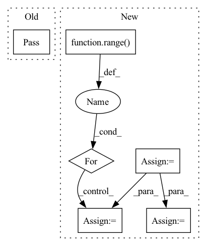

Pattern ID :34651
Before Change
// return cate_pred_list, kernel_pred_list
if self.training:
pass
// return self.forward_train(feats, targets)
else:
seg_masks, cate_labels, cate_scores, bbox_num = self.forward_eval(cate_pred_list, kernel_pred_list,
seg_pred, im_shape, ori_shape)After Change
ins_labels = []
cate_labels = []
grid_order_list = []
i = 0
for lvl in range(len(self.seg_num_grids)):
ins_labels.append(targets[i]); i += 1
for lvl in range( len(self.seg_num_grids)):
cate_labels.append(targets[i].to(torch.int32)); i += 1
for lvl in range(len(self.seg_num_grids)):
grid_order_list.append(targets[i].to(torch.int32)); i += 1
return self.forward_train(cate_pred_list, kernel_pred_list, seg_pred, ins_labels, cate_labels, grid_order_list, fg_nums)
else:
seg_masks, cate_labels, cate_scores, bbox_num = self.forward_eval(cate_pred_list, kernel_pred_list,In pattern: SUPERPATTERN
Frequency: 4
Non-data size: 6
Instances Fragment ID: 99548330
Project Name: miemie2013/miemiedetection
Commit Name: 49afa0099c63a554923f16bc24439bc547d1d52e
Time: 2022-07-15
Author: 53960695+miemie2013@users.noreply.github.com
File Name: mmdet/models/heads/solov2_head.py
M Class Name: SOLOv2Head
N Class Name: SOLOv2Head
M Method Name: forward(7)
N Method Name: forward(5)
M Parent Class: nn.Module
N Parent Class: nn.Module
M File Name: mmdet/models/heads/solov2_head.py
N File Name: mmdet/models/heads/solov2_head.py
M Start Line: 351
M End Line: 351
N Start Line: 330
N End Line: 362
Before Change
@staticmethod
def start(self):
pass
After Change
self.optimizer = optimizer
def start(self):
graph = Graph(BASE_GRAPH,
BASE_GRAPH_NODE_FEATURES,
BASE_GRAPH_EDGE_FEATURES)
graph_encoder = GraphEncoder(graph)
self.loss_function = nn.MSELoss()
self.optimizer = optim.SGD(graph_encoder.parameters(), lr=0.001, momentum=0.9)
for epoch in range( self.epochs):
running_loss = 0.0
self.optimizer.zero_grad()
outputs = graph_encoder.forward(graph)
loss = self.loss_function(outputs, graph.node_features)
loss.backward()
self.optimizer.step()
Fragment ID: 99548488
Project Name: kovanostra/message-passing-neural-network
Commit Name: 006d64407b4a9ec5703e3b59ab2cd7c25bf6455b
Time: 2020-03-24
Author: kovanostra@gmail.com
File Name: src/usecase/train.py
M Class Name: Train
N Class Name: Train
M Method Name: start(1)
N Method Name: start(1)
M Parent Class:
N Parent Class:
M File Name: src/usecase/train.py
N File Name: src/usecase/train.py
M Start Line: 9
M End Line: 9
N Start Line: 15
N End Line: 35
Before Change
pass
def get_Y(self, idx):
pass
After Change
return res
def get_Y(self, idx):
dy = 1.0 / self.N_strat
res = torch.zeros([self.dim])
ID = self._get_indices(idx)
random_uni = torch.rand(size=[self.dim])
for i in range( self.dim):
res[i] = random_uni[i] * dy + ID[i] * dy
return res
Fragment ID: 99548518
Project Name: esa/torchquad
Commit Name: 1ab0c9f5691fe4971626169a351a42fbd4eb9c9f
Time: 2021-04-09
Author: contact@pablo-gomez.net
File Name: torchquad/integration/vegas_stratification.py
M Class Name: VEGASStratification
N Class Name: VEGASStratification
M Method Name: get_Y(2)
N Method Name: get_Y(2)
M Parent Class:
N Parent Class:
M File Name: torchquad/integration/vegas_stratification.py
N File Name: torchquad/integration/vegas_stratification.py
M Start Line: 28
M End Line: 28
N Start Line: 65
N End Line: 71
Before Change
pass
def __call__(self, predicted_panels, original_panels=None, data_stats={}):
pass
// ------- custom quality metrics --------
class PatternStitchPrecisionRecall():After Change
if len(predicted_panels.shape) > 3:
predicted_panels = predicted_panels.view(-1, predicted_panels.shape[-2], predicted_panels.shape[-1])
if gt_panels is not None and len(gt_panels.shape) > 3:
gt_panels = gt_panels.view(-1, gt_panels.shape[-2], gt_panels.shape[-1])
chosen_panels = gt_panels
// choose the closest version of original panel for each predicted panel
for el_id in range( predicted_panels.shape[0]):
seq_len = panel_len_from_padded(gt_panels[el_id], empty_template=self.empty_panel_template)
// get per-coordinate sum of edges endpoints of each panel
// should be close to sum of the equvalent number of pading values (since all of coords are shifted due to normalization\standardization) Fragment ID: 99548454
Project Name: maria-korosteleva/garment-pattern-estimation
Commit Name: 31317fe13350b4cd2b0037c5091de4ae38c21c25
Time: 2021-04-12
Author: mariako@kaist.ac.kr
File Name: nn/metrics.py
M Class Name: PanelShapeOriginAgnosticLoss
N Class Name: PanelShapeOriginAgnosticLoss
M Method Name: __call__(3)
N Method Name: __call__(4)
M Parent Class: PanelLoopLoss
N Parent Class:
M File Name: nn/metrics.py
N File Name: nn/metrics.py
M Start Line: 219
M End Line: 220
N Start Line: 228
N End Line: 245